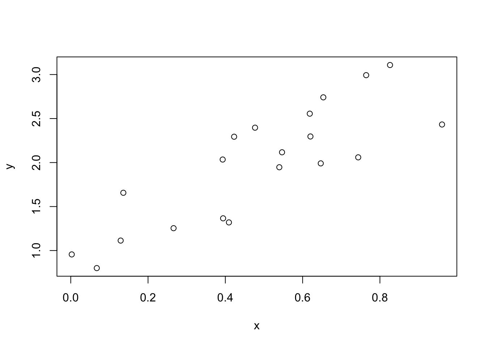
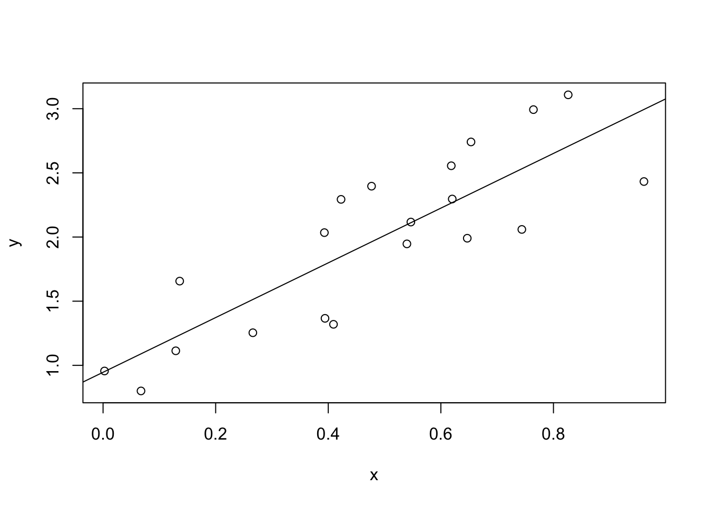
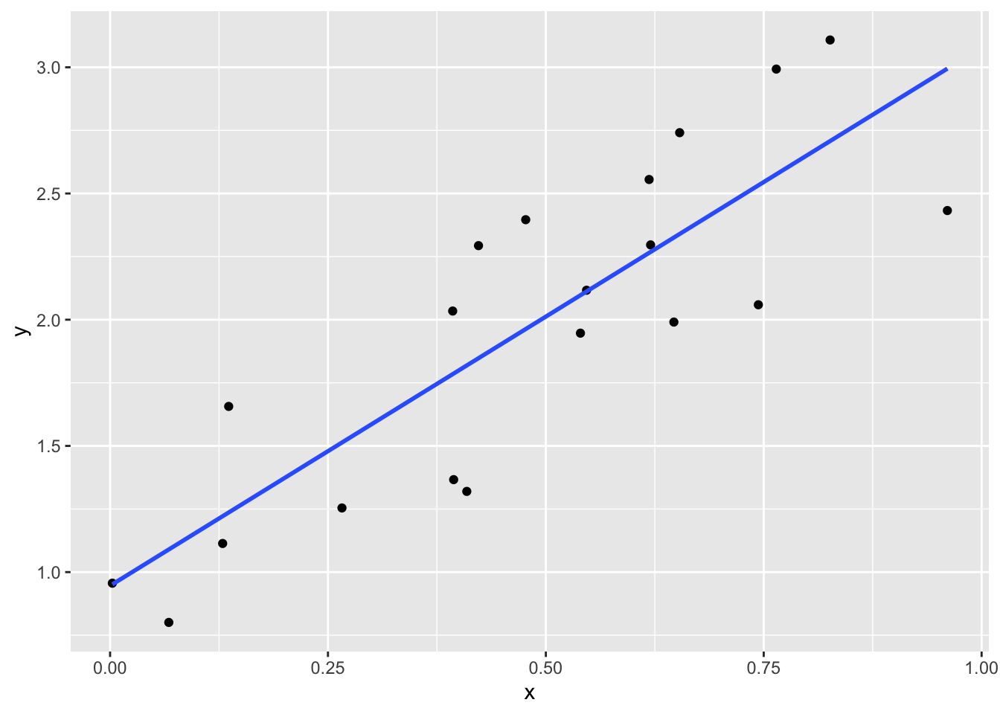

# In R, comments start with # symbol
# This line will not be runInstall R and RStudio:
For Windows users, install Rtools for using some R packages (e.g., ggplot2).
R creates an interactive environment for you to play with data and statistical models. If you have no exposure to computer-based statistical computing before, I dare say that learning R will be the most valuable experience for you in this course.
After installing R and RStudio on your PC/Mac, you can play with the following scripts in RStudio. You can run R Scripts line by line using the shortcut Ctrl-Enter/Command-Enter (or maybe Shift-Enter depending on your local machine).
# In R, comments start with # symbol
# This line will not be runnum = 3
num + 2[1] 5## vector
x = c(2, 7, 5) # Here "c" is short for combine
x[1] 2 7 5## a vector (sequence) from 1 to 5
y = seq(1, 5)
y[1] 1 2 3 4 5## a sequence from 1 to 5 with step=2
seq(1, 5, 2) # seq(from=1, to=5, by=2)[1] 1 3 5?seq
x + yWarning in x + y: longer object length is not a multiple of shorter object
length[1] 3 9 8 6 12options(warn = -1) # hide warnings
x / y[1] 2.000000 3.500000 1.666667 0.500000 1.400000## extracting sub-vector (also called subsetting)
x[1][1] 2c(x[1], x[3])[1] 2 5x[1:3] # same as x as length(x) == 3[1] 2 7 5length(x)[1] 3x[-1][1] 7 5## matrix
z = matrix(seq(1,12), nrow= 3)
z [,1] [,2] [,3] [,4]
[1,] 1 4 7 10
[2,] 2 5 8 11
[3,] 3 6 9 12dim(z)[1] 3 4length(z)[1] 12ls()[1] "num" "x" "y" "z" rm(x)
ls()[1] "num" "y" "z" set.seed(2020)
x = runif(20)
x [1] 0.646902839 0.394225758 0.618501814 0.476891136 0.136097186 0.067384386
[7] 0.129152617 0.393117930 0.002582699 0.620205954 0.764414018 0.743835758
[13] 0.826165695 0.422729083 0.409287665 0.539692614 0.960722398 0.653557334
[19] 0.546715299 0.266063566e = runif(20)
y = 0.5 + x * 2 + e
plot(x,y)
Basic R provides lm() for fitting linear models. Here we simply regress y on x.
First, we create a dataframe for our generated data:
my_data = data.frame(y = y, x = x)my_lm = lm(y ~ x, data = my_data)
summary(my_lm)
Call:
lm(formula = y ~ x, data = my_data)
Residuals:
Min 1Q Median 3Q Max
-0.56217 -0.30050 0.00473 0.40064 0.44601
Coefficients:
Estimate Std. Error t value Pr(>|t|)
(Intercept) 0.946 0.176 5.374 4.16e-05 ***
x 2.132 0.323 6.602 3.36e-06 ***
---
Signif. codes: 0 '***' 0.001 '**' 0.01 '*' 0.05 '.' 0.1 ' ' 1
Residual standard error: 0.3703 on 18 degrees of freedom
Multiple R-squared: 0.7077, Adjusted R-squared: 0.6915
F-statistic: 43.59 on 1 and 18 DF, p-value: 3.362e-06my_lm["coefficients"]$coefficients
(Intercept) x
0.9459971 2.1324126 # To know other options besides coefficients, run
# str(my_lm)
# Also, try running:
# my_lm$coefficients#create scatterplot
plot(y ~ x, data=my_data)
#add fitted regression line to scatterplot
abline(my_lm)
Base R is powerful enough for many routine statistical tasks. You can also use third-party R packages to make your work easier.
ggplot2 is a package for plotting, which provides a more sophisticated layout than the base plot() function:
# install ggplot2. You only need to do it once.
install.packages("ggplot2")library(ggplot2)
#create scatterplot with fitted regression line
ggplot(my_data, aes(x = x, y = y)) +
geom_point() +
stat_smooth(method = "lm", se=FALSE)`geom_smooth()` using formula = 'y ~ x'
You should have a basic understanding about using R now. For further knowledge, I recommend the following materials:
How do you create a vector in R?
Given a vector x, how to get its length?
How to create a vector in R?
Given x=c(1,2,3) and y=c(1,5), what’s x-y?
Given a vector x, how do you get its third element? What if length(x) == 2?
How do you generate a sequence where each ?
what’s a seed? Why do we use set.seed(2020)?
Given a data set data with two variables x and y, how do you fit the linear model ?
Explain the output of summary(my_lm) in our example:
Call:
lm(formula = y ~ x, data = my_data)
Residuals:
Min 1Q Median 3Q Max
-0.56217 -0.30050 0.00473 0.40064 0.44601
Coefficients:
Estimate Std. Error t value Pr(>|t|)
(Intercept) 0.946 0.176 5.374 4.16e-05 ***
x 2.132 0.323 6.602 3.36e-06 ***
---
Signif. codes: 0 '***' 0.001 '**' 0.01 '*' 0.05 '.' 0.1 ' ' 1
Residual standard error: 0.3703 on 18 degrees of freedom
Multiple R-squared: 0.7077, Adjusted R-squared: 0.6915
F-statistic: 43.59 on 1 and 18 DF, p-value: 3.362e-06